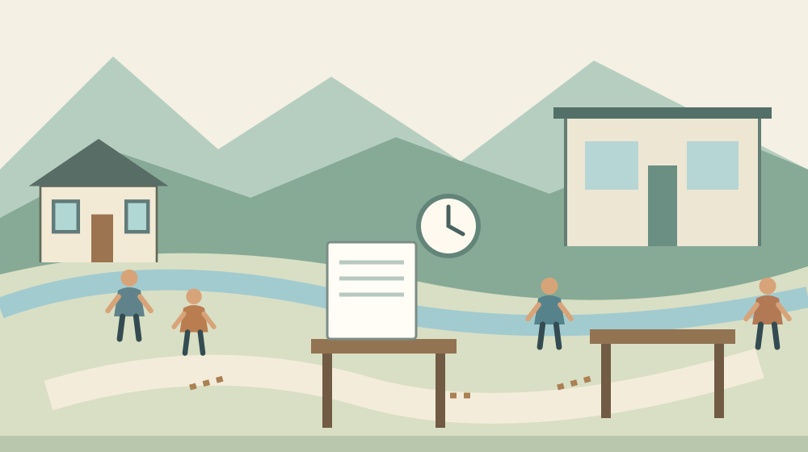

森町社協の弁護士相談｜親の財産管理を相談する
Q. 親のお金や家の管理が心配。森町社協の弁護士相談はどう使えばいい？
森町社会福祉協議会は、7月・11月・3月の第2火曜日に無料の弁護士相談を案内しています。相談は予約制で1回30分、予約開始は開催日前月です。親の財産管理も相談例に含まれます。2026年11月の個別日程と残席は未確認のため、事務局0538-85-5769へ確認し、困っていることを一つ整理してから予約してください。
親を支える家族の時間から、相談を考える
森町で親の財産管理を心配する家族には、法律の疑問と日々の用事が同時に生じます。通院に付き添い、支払いを気にかけ、離れて暮らすきょうだいへ説明する。家をどうするかまで考える前に、その負担を抱えている方がいることから話を始めたいと思います。
私は大石浩之（磐田市／不動産業）です。家や土地の話をするときも、持ち主の意思や家族の段取りを飛ばして結論を出すべきではないと考えています。この記事では法律上の可否を判断せず、森町社会福祉協議会の弁護士相談へ持ち込む疑問の整理を扱います。
私の考えは、相談へ行くことと、親の家を売るなどの結論を出すことを分けるものです。まだ決められない理由があるなら、その理由も相談の材料になります。今日の成果を「決断」ではなく、「専門家に尋ねることが一つ分かった」に置いても構いません。
社協の弁護士相談で確認できた案内
森町社会福祉協議会の「相談事業・暮らしのお手伝い」には、生活上の法律的事項を扱う弁護士相談が掲載されています。相談員は弁護士で、相談は無料です。公式本文を2026年10月26日に確認しました。町役場が案内する無料法律相談とは別の案内です。
開催日は7月、11月、3月の各第2火曜日と記載されています。開催時間は13時30分から15時30分で、1回の相談は30分です。会場は森町保健福祉センター内の相談室。予約制で、予約開始は開催日前月とされています。
今回確認したページには、公表日や更新日の表示が見当たりませんでした。2026年11月の個別開催日、予約開始日の具体的な日付、現在の残席は未確認です。定例案内を根拠に、10月のうちに開催と予約状況を問い合わせる記事として読んでください。
社協の相談例には、親の認知症が進み、物忘れや記憶違いがあり、財産管理が心配な場合が挙がっています。本人の診断や能力をこの記事で判定するものではありません。どのような不安を相談できるか、その入口を示す例として掲載されています。
問い合わせ先は森町社会福祉協議会事務局、電話0538-85-5769です。申し込める人の範囲、同席者の扱い、持参資料など、本文だけで分からない条件は予約時に確認します。親本人が来られない場合も、家族だけで相談できると先に決めつけずに尋ねてください。
30分は、家族の歴史を全部話すための時間ではない
社協の弁護士相談は1回30分と案内されています。家族に長い経緯があれば、何から話すか迷う時間も生じます。私は、説明を短くするために気持ちを切り捨てるのではなく、最初に専門家へ尋ねたい問いを一つ決める方法を提案します。
たとえば「親の家をどうするか」では範囲が広くなります。「本人の意思をどう確認し、誰に何を相談すべきか」なら、最初の疑問が見えます。これは相談内容の例で、特定の法律手続きが必要だと判断しているわけではありません。状況に合う問いを専門家と確かめるための準備です。
相談メモは、本人の様子、今困っている用事、確認したいことに分けられます。私は、本人が話した言葉と、家族が心配していることを別の欄に置く考えです。「本人がこう言った」と「家族はこう感じた」を混ぜない方が、状況を正確に説明しやすくなります。
日付も、分かる範囲で残します。いつから困っているか、支払いなどの期限があるか、窓口へ相談した日はいつか。記憶が曖昧なところは「時期不明」と書けば構いません。正確に見せようとして、覚えていない日付を埋める必要はありません。
私なら、最初の質問を紙の上部に書き、背景は短く添えます。資料が何枚もあっても、最初にどこを見てほしいかが分かる形です。弁護士が詳しく確認したい点は、質問に沿って補足できます。相談時間の使い方を、家族側でも準備するという考え方です。
家とお金の資料は、持ち出す前に必要性を確かめる
親の財産管理の相談では、どの資料が必要かを予約時に確認できます。社協の今回の案内には、弁護士相談の持ち物を一律に指定する記載はありません。私は、先に書類を取り寄せるより、相談したい内容を伝えて準備の範囲を尋ねる方法を勧めます。
家や土地について話すなら、本人との関係、所在地、分かっている名義を整理する考えです。ただし、家族の記憶にある名義と資料の記載が一致するかは別途確認が必要です。分からないことを「本人名義のはず」で進めず、未確認と書いておく方が相談の出発点が明確になります。
支払いに関する疑問なら、何の支払いか、期限の記載があるか、本人が困っているのか家族が心配しているのかを分けます。金額や契約の内容を記事に当てはめて判断しないでください。私は、支払いの可否を決める前に、誰が判断する事項かを専門家に尋ねる考えです。
家族が資料を準備するときも、必要以上に個人情報を広げない配慮が要ります。私は、家族全員へ書類を転送するより、相談に必要な範囲を確認してから共有する方法を考えます。原本が必要か写しでよいかも、窓口へ尋ねる項目です。
証明書の取得が必要になった場合は、子が親の証明書を取るときの準備の記事が参考になります。ただし、弁護士相談へ行くために全員が証明書を取得するという意味ではありません。取得の条件と、今回の相談での必要性は分けて確かめます。
良い点｜財産管理の心配を具体的な相談例にしている
森町社協の案内は、親の財産管理への不安を、弁護士相談の例として具体的に示しています。私は、この書き方を評価します。「法律問題かどうか分からない」と迷っている家族でも、生活の中の心配を問い合わせてよいのか考える入口になるためです。
費用が無料で、1回の時間と予約の扱いが示されている点も、家族の予定を組む助けになります。私は、利用できる制度の名前だけでなく、誰がいつ電話し、どれだけ時間を取るかまで見える案内に価値があると考えます。付き添う人の仕事や移動も準備に含まれます。
町の「高齢者のための相談窓口」では、地域包括支援センターが本人や家族の生活、健康、財産管理などの相談を受けると説明しています。法律相談と日常の支援を、同じ一人に全部背負わせずに考えられる入口が町内にあることも、私は心強いと感じます。
私は、弁護士相談と地域包括支援センターの役割を比べて、一方だけを選ぶ話にはしたくありません。法律上の疑問と、毎日の暮らしの困りごとはつながっています。どの機関と話を進めるかを、相談内容に応じて確認できることが、家族の負担を分ける助けになります。
注文したい点｜個別日程と利用条件まで見えると動きやすい
社協の定例案内には、2026年11月の残席や個別の予約開始日の表示はありません。私は、次回の開催情報や予約状況を確認する方法が、より近い位置にあると助かると考えます。遠方の家族が帰省日を決める場合、日程の読み替えだけでは予定を確定できないためです。
家族のみの相談、本人との同席、必要資料なども、問い合わせて確かめる事項です。私は、よく尋ねられる条件が簡潔に示されれば、窓口の担い手にも利用者にも時間の余裕が生まれると思います。職員が個別の事情を聞く必要は残しつつ、共通の準備を見つけやすくする希望です。
一方で、私は予約枠を埋めることだけを目的に案内するつもりはありません。問題によっては定例相談の日まで待てない場合もあります。期限が迫っている事情があるなら、予約の電話でその日付を先に伝え、別の相談先を含めて確認する方法を考えます。
私自身、家族の不安に早く答えたい気持ちと、急いで制度へ当てはめたくない気持ちの間で迷います。家の処分を急ぐことが答えとは限りません。だから、親の状態や権限を不動産業者だけで判断せず、法律家に確認すべきことを分ける線を守ります。
意外な点｜同じ社協でも成年後見相談は別の枠
森町社協の同じページには、弁護士相談とは別に成年後見制度相談があります。相談員はリーガルサポート静岡支部所属の司法書士で、権利擁護に関する相談を無料で受けるとしています。二つを同じ相談会として申し込まないよう、名称を確認できます。
成年後見制度相談の定例案内は、毎月第1火曜日で、祝日の場合は翌週火曜日です。時間は13時30分から16時30分、1回30分。相談日前日の16時までの予約とされています。弁護士相談の開催月や予約開始の扱いとは異なります。
私は、親の財産管理が心配というだけで、成年後見制度の利用を記事から勧め切ることはしません。どの制度や支援が適切かは、本人の状況と意向を含めて判断することです。相談の名称を分けるのは、必要な専門家につながるためであって、結論を先取りするためではありません。
地域包括支援センターから考える入口は、森町の成年後見制度の相談記事で整理しています。今回の記事は、社協の弁護士に限られた時間で何を尋ねるかが主題です。制度の説明を読むだけでなく、家族の具体的な疑問を持ち込む準備につなげます。
対案・結論｜予約前に質問を一つ、電話後に予定を一つ
森町社協の弁護士相談を検討する家族は、今日、親の財産管理で困っていることを一文にできます。私は「家をどうするか決めたい」より先に、「今、何が分からなくて止まっているか」を書く方法を勧めます。決まっていないことがあっても相談準備は始められます。
電話では、11月の弁護士相談について確認したいと伝え、開催日と予約状況を尋ねます。利用できる人の条件、同席できる人、必要資料、当日の受付場所も質問にできます。公式本文で未確認の事項を、推測で埋めずに問い合わせるための電話です。
予約できたら、日時と場所、持ち物、連絡先を家族で共有します。予約が取れなかった場合は、その事実を残し、別の機会や窓口を確認します。「問い合わせた」と「予約が確定した」を同じ扱いにしないことが、付き添う人の無駄な移動を減らします。

森町の施設案内によると、保健福祉センターは森町森50-1にあり、社協や町の福祉関係の窓口などが入る複合施設です。建物が同じでも、受付や担当まで同じとは限りません。私は、相談室への行き方や当日の受付先を、予約時に尋ねておく提案をします。
相談を終えたら、家族が次に行う作業と、まだ決めない事項を分けます。私は、聞いた答えを短く書き、分からなかった点があればその場で確認する考えです。帰宅後にきょうだいへ説明するときも、専門家の回答と自分の希望を混ぜずに伝えやすくなります。
大石の視点｜家を売る前に、判断できる材料をそろえる
親の家の相談では、不動産の価値だけでなく、本人の意思と、家族が動ける範囲を確かめる必要があると私は考えます。維持費の負担が気になっても、すぐに処分の話へ進めるとは限りません。今日の相談は、売却の承諾を取るためではなく、判断の材料を増やすために使えます。
私が30分の相談を準備するなら、机の上に「今困っていること」と「本人の希望」を別々に置きます。ここで描くのは実際にあった相談ではなく、私の考える整理の場面です。家族が代わりに動くほど、本人の気持ちが説明から抜けないよう気をつけたいと思います。
介護の負担が話の中心になっている場合は、親の介護で最初の相談先を決める記事も参照できます。家とお金の心配を一人で抱えると、日々の支援まで回らなくなるおそれがあります。相談先を分けることは、家族の役割を減らすためにも考えられます。
まだ結論を出せない家族に、私は急いで答えを選んでほしいとは思いません。ただ、相談したい問いを一つ書くことは今日できます。11月の開催と予約を確認し、何を専門家に尋ねるかを決める。その小さな準備が、親と家族の選択肢を残すことにつながると考えています。
FAQ｜社協の弁護士相談を使う前に
11月の相談は、今から必ず予約できますか？
社協の定例案内では、11月の第2火曜日に開催し、予約開始は開催日前月としています。ただし、2026年11月の個別日程や残席は確認できていません。事務局0538-85-5769へ、開催と予約状況を問い合わせてください。定例の記載だけで予約できると判断せず、受付の返答を受けて予定を確定します。
親の財産管理の心配だけでも相談できますか？
社協は、親の認知症が進み財産管理が心配な場合を、弁護士相談の例に挙げています。家族だけで相談できるか、本人の同席やどの資料が必要かは、予約時に確認してください。家の売却や制度利用を決めている必要があるとは本文に書かれていません。困っていることと確認したいことを分けて伝えられます。
弁護士相談と成年後見制度相談は同じですか？
社協のページでは別の相談として案内されています。弁護士相談は7月・11月・3月の第2火曜日、成年後見制度相談は司法書士が担当し、原則毎月第1火曜日です。予約の扱いも異なります。親の財産管理でどちらが適切か迷う場合は、相談内容を事務局へ伝え、確認先を尋ねてから申し込んでください。
出典・確認日
2026年10月確認。開催・制度の数値は公式情報、評価と段取りの提案は執筆者の意見です。
- 森町社会福祉協議会：相談事業・暮らしのお手伝い（2026年10月26日確認）
- 森町：高齢者のための相談窓口（2026年10月26日確認）
- 森町：森町保健福祉センター（2026年10月26日確認）
開催日時、取扱条件、制度・数値は変わる場合があります。実際の利用前に主催者・担当窓口の最新案内を確認してください。個別の判断が必要な場合は、担当窓口や関係する専門家へご相談ください。